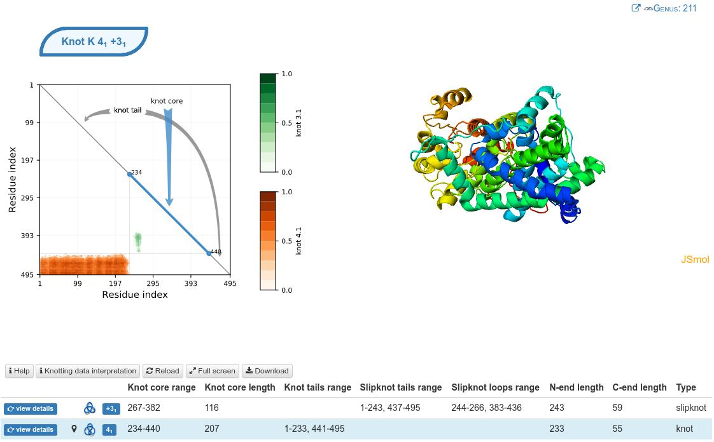

Knots, biology, (and data)
hchapman.org/talks/knot_top_data
Applied Topology Seminar
Colorado State University
October 22, 2019
Knotted E. coli DNA
Knots and entanglement
An equivalence class of embeddings of multiple circles is a link
Knots and links provide a model for entanglement
Knotting and linking in DNA
Knotted DNA
High-resolution AFM image
Taken with atomic force microscopy

AFM image
DNA replication
Cell division

Linked daughter DNA inhibits cell division
Topo-IV

Topo-IV is a topoisomerase that passes one piece of double helix through another, a local move called strand passage
Topo-IV transitions
XerCD and other local moves
Other local moves can be performed by other enzymes,
such as XerCD-dif-FtsK complex that performs
coherent smoothing (an example of band surgery)

Conformation of chromatin

Hi-C
Technique which builds pairwise proximity matrix of genome
Can this answer whether DNA was knotted?
Possible structure of chromatin
Knotting in linear (bio)polymers
While prokaryotes have circular DNA, eukaryotes (e.g. mammals) have linear DNA
Light-bulb theorem
All embeddings of the interval into \(\mathbb R^3\) are ambient isotopic to the trivial embedding.One method: Sphere closure
Most methods depend on a projection angle; are there any reasonable methods that do not?
Subknots in knots
Knots in Proteins
KnotProt
Contacts in molecules and genus
Thanks!
See more at my Joint Meetings section on
Applications and Computations in Knot Theory
Friday Jan. 17: 8am–10:50am
Saturday Jan. 18: 8am–11:50am